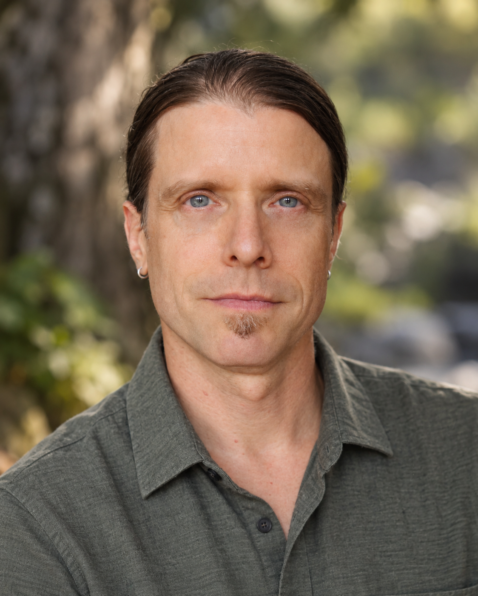

About Steven

My path into psychotherapy grew out of my own experience of therapy, decades of contemplative practice, and a longstanding curiosity about what helps people heal, change, and become more fully themselves. I’ve practiced meditation for over 30 years, including within Zen and Tibetan Buddhist traditions.
Before becoming a therapist, I moved through a few different worlds. I worked with environmental organizations, lived off-grid in the mountains of British Columbia, travelled through Central America, Mexico and India, and eventually returned to Toronto. Music has been a constant throughout. I’ve been a drummer since my teens, drawn especially to improvisation and the kind of listening, risk and connection that can happen when people create something together.
I completed my psychotherapy training at the Gestalt Institute of Toronto, following earlier studies at The Living Institute. My approach is relational, somatic and mindfulness-informed. I bring warmth, curiosity and honest presence to the therapy room, creating a safe and inclusive space where you can be fully yourself. I respect diversity in all its forms and welcome people from a wide range of backgrounds, identities and life experiences.
I specialize in supporting people navigating anxiety, depression, grief, shame, addiction, trauma, relationship difficulties, loneliness and life transitions. For me, therapy is far more than symptom reduction; it’s an adventure into your own story. Together, we can uncover the patterns that hold you back, reconnect with forgotten or suppressed parts of yourself, and discover greater freedom in how you relate to the world and live your life.